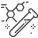

Наши приоритеты
Безопасность и качество
- Первый этап: химический анализ минеральной воды из скважины. 
- Второй этап: микробиологический анализ промывной воды после обработки ёмкости бювета.
- Третий этап: анализ промывной воды на содержание остаточного хлора.
- Четвёртый этап: микробиологический анализ минеральной воды на питьевом бювете.